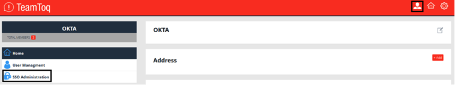
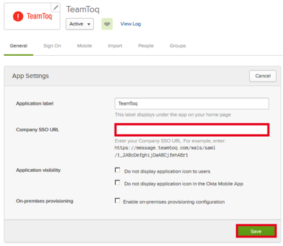
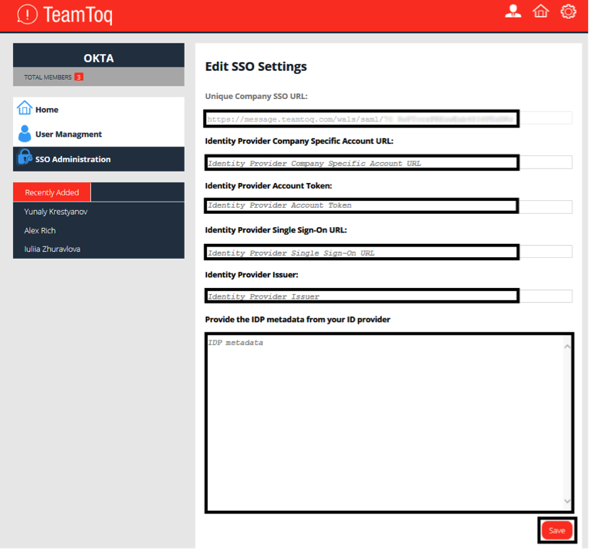

This setup might fail without parameter values that are customized for your organization. Please use the Okta Administrator Dashboard to add an application and view the values that are specific for your organization.
Log into TeamToq as an administrator.
Navigate to Admin page > SSO Administration:

Scroll down and copy the value for Unique Company SSO URL: Save this value, then in Okta, select the General tab for the TeamToq app and enter that value in the Company SSO URL field:

On the Admin page > SSO Administration > Edit SSO Settings page, enter the following information (see screen capture at end of step for reference):
Identity Provider Company Specific Account URL:
Identity Provider Account Token: Enter your OKTA API token, as follows:
In OKTA, from the Admin Dashboard, navigate to the Security > API.
Click Create Token.
Enter a token name.
Click Create Token.
Take note of your token value, then click OK, got it.
Identity Provider Single Sign-On URL:
Identity Provider Issuer:
IDP Metadata: Copy the following into this field:

Click Save.
Done!
Notes:
IdP-initiated flows and Just In Time (JIT) provisioning are supported.